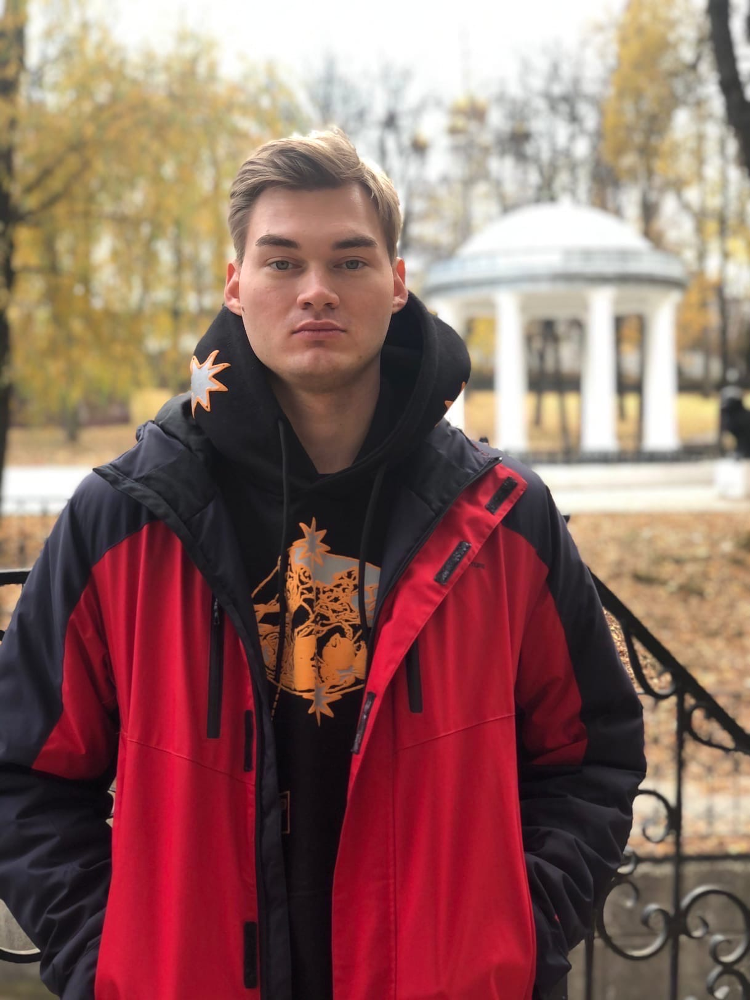

Добрый день! Прошу рассмотреть мою кандидатуру на вакансию Junior Frontend Developer. Имею небольшой опыт создания и верстки сайтов, написание простых программ и алгоритмов, создание ботов для telegram. Знание основ Frontend-разработки, базовые знания языков: JavaScript, CSS3, HTML5, а также ООП, машинное представление данных, основы алгоритмов, умею работать с Git. С уважением, Константинов Д.A.
Требования к работодателю и ожидания от работы: Интересные и сложные проекты, удобное и комфортное рабочее место, дружный и веселый коллектив, возможность карьерного роста и достойная зарплата.
Ведущий независимый федеральный оператор телеком-услуг в России. Работает с 2001 года. Поставщик quadro-play услуг: широкополосный доступ ШПД в интернет, кабельное и HD-телевидение, мобильная и городская телефонная связь.
Должность: Специалист группы технической поддержки. Основные обязанности: Решать технические вопросы: проводить удаленную диагностику и настраивать сетевое оборудование клиентов, настраивать программное обеспечение. Вносить информацию в базу данных. Знания: TCP/IP. Принципы работы: DNS и DHCP. Команды: ping, nslookup, ipconfig, tracert, netstat. Принципы работы и различие сетевого оборудования (роутер, switch, hub). Принцип работы WI-FI (стандарты скорости и типы шифрования). Знания модели OSI (физический, канальный, сетевой, транспортный уровни).
Должность: Сервисный инженер. Основные обязанности: Оперативное устранение технических неполадок;Подключение кабельного телевидения (монтаж коаксиального кабеля, обжим, установка кабель — каналов); Подключение Интернет (монтаж витой пары, установка активного оборудования);Установка и настройка сетевой карты; протоколов для установленной сетевой карты и др., настройка ПК
Химическое производство, удобрения, неорганическая химия (производство, продвижение, оптовая торговля)
Должность: Слесарь КИПиА 5 разряда - Обслуживание и ремонт приборов КИП, электромонтажные работы, программирование и настройка контроллеров.
Производство: Энергоэффективные УЭЦН, Colibri ESP, УЭЦН для боковых стволов, Интеллектуальная скважина, Объемные насосы для вязкой нефти, Оборудование для систем ППД.
Должность: Слесарь КИПиА - ДПр СП участок сборки ТМС, СУ и КП.
Монтажно-наладочного предприятие, выполняющее электромонтажные и пусконаладочные работы систем управления и контроля на объектах строительства, реконструкции и капитального ремонта во всех отраслях промышленности.
Должность: Электромонтажник. Обязанности: подключение приборов, прокладка электропроводки и кабельных линий на предприятиях: Сибур-Химпром, Лукойл-Пермнефтеоргсинтез.
Компания занимается ремонтом бытовой и цифровой техники
Должность: Компьютерный мастер. Обязанности: диагностика, ремонт ПК и ноутбуков, восстановление данных, настройка ПО, настройка роутеров, перепрошивка смартфонов.
Знание языков: Русский — Родной, Английский B1 — Средний
Photoshop, MS: Word, Visio, Excel, создание простых сайтов, ремонт ПК, автоматизация производства, чтение и разработка электросхем, обслуживание приборов КИП, электромонтажные работы, siemens logo.
Дополнительная информация обо мне: Ответственный, быстро обучаемый, умею работать в команде, исполнительный, веду активный образ жизни, изучаю Python, планирую получать высшее образование.